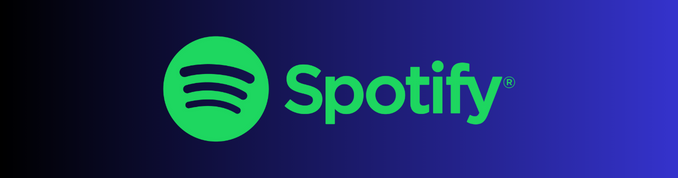

10) Twitch
A Twitch é uma plataforma de streaming de vídeo ao vivo, principalmente focada em conteúdo relacionado a jogos eletrônicos, mas também abrangendo uma variedade de outros temas, como música, arte, entretenimento e estilo de vida. Foi lançada oficialmente em junho de 2011 por Justin Kan e Emmett Shear como uma extensão da plataforma de streaming de vídeo ao vivo chamada Justin.tv. Inicialmente, a Twitch era especificamente focada em streaming de jogos, mas cresceu enormemente ao longo dos anos e se tornou uma das principais plataformas de entretenimento ao vivo na internet.
09) X
X, popularmente conhecido pelo seu nome anterior Twitter é uma plataforma de mídia social que permite aos usuários postar e interagir com mensagens curtas chamadas "tweets". Estes tweets têm um limite de caracteres, originalmente de 140 caracteres, mas posteriormente expandido para 280 caracteres. Lançado em março de 2006 por Jack Dorsey, Noah Glass, Biz Stone e Evan Williams, o Twitter tornou-se uma das redes sociais mais populares e influentes do mundo. Os usuários podem seguir outras pessoas para ver seus tweets em suas linhas do tempo, e também podem compartilhar tweets, responder a eles e retweetá-los para seus próprios seguidores. O Twitter é usado para uma variedade de propósitos, incluindo compartilhamento de notícias, discussões sobre tópicos variados, interação com celebridades e empresas, e muito mais.
08) My anime List
MyAnimeList, muitas vezes abreviado para MAL é um site que funciona como uma base de dados e rede social dedicada a animes e mangás. Ele permite aos usuários acompanhar o que assistiram, leram ou pretendem assistir e ler, além de avaliar e fazer resenhas sobre os títulos. Também oferece informações detalhadas sobre os animes e mangás, como sinopses, staffs, elencos, classificações e muito mais. Lançado em 2005, o MyAnimeList cresceu ao longo dos anos para se tornar uma das principais plataformas para fãs de anime e mangá compartilharem suas experiências e descobrirem novos títulos para assistir ou ler.
07) Github
O GitHub é uma plataforma de desenvolvimento colaborativo baseada na web, que utiliza o sistema de controle de versão Git. Ele é amplamente utilizado por desenvolvedores de software para hospedar, revisar e colaborar em projetos de código aberto e privados. O GitHub fornece ferramentas para gerenciamento de projetos, rastreamento de problemas, integração contínua e distribuição de código.
Lançado em abril de 2008, o GitHub foi fundado por Tom Preston-Werner, Chris Wanstrath e PJ Hyett. Desde então, tornou-se uma das maiores e mais influentes plataformas de desenvolvimento de software do mundo. Em 2018, a Microsoft adquiriu o GitHub, mas a plataforma continua a operar de forma independente e a ser amplamente utilizada pela comunidade de desenvolvedores.
06) Notion
O Notion é uma ferramenta de produtividade e colaboração que combina várias funcionalidades, incluindo notas, gerenciamento de projetos, wikis, bases de dados e muito mais, tudo em um único aplicativo. Ele oferece uma interface flexível e personalizável que permite aos usuários organizar e gerenciar suas informações de maneira intuitiva.
ançado em 2016 pela Notion Labs Inc., o Notion rapidamente ganhou popularidade devido à sua versatilidade e capacidade de se adaptar a uma ampla gama de casos de uso, desde gerenciamento de tarefas pessoais até colaboração em equipe em projetos complexos. O Notion está disponível para uma variedade de plataformas.
05) Crunchyroll
A Crunchyroll é um serviço de streaming de vídeo dedicado à distribuição de conteúdo de anime, dorama e cultura asiática. Fundada em maio de 2006 por Kun Gao, a Crunchyroll começou como um site de compartilhamento de vídeos de fãs de anime e se transformou em uma plataforma oficial de streaming legal ao longo do tempo.
Originalmente, a Crunchyroll oferecia principalmente conteúdo licenciado de outras empresas, mas ao longo dos anos, também começou a produzir e licenciar seu próprio conteúdo original. Ela se tornou uma das principais plataformas de streaming para fãs de anime em todo o mundo, oferecendo uma vasta biblioteca de títulos para seus assinantes.
04) Spotify
O Spotify é um serviço de streaming de música que oferece acesso a milhões de faixas de música de diversos gêneros, artistas e álbuns. Lançado em 7 de outubro de 2008, na Suécia, por Daniel Ek e Martin Lorentzon, o Spotify revolucionou a forma como as pessoas consomem música, proporcionando uma alternativa legal e conveniente ao download de música ilegal.
03) Amor Doce
Amor Doce" é um jogo eletrônico francês do gênero visual novel, desenvolvido pela empresa Beemoov e lançado em 2011. Ele é conhecido por seu enredo romântico e por permitir que os jogadores interajam com diferentes personagens e escolham seus próprios caminhos na história. O jogo é predominantemente focado em um público feminino jovem e ganhou popularidade ao longo dos anos, especialmente entre adolescentes e jovens adultos. Desde o seu lançamento inicial, o jogo passou por várias atualizações e continua a receber novos conteúdos regularmente, Amor Doce é um jogo online baseado em navegador, o que significa que não é necessário baixar ou instalar nada em seu dispositivo.

02) Linkedin
O LinkedIn é uma rede social profissional voltada para conectar profissionais, empresas e instituições. Ele foi lançado em 5 de maio de 2003, por Reid Hoffman, Allen Blue, Konstantin Guericke, Eric Ly e Jean-Luc Vaillant. Originalmente, o LinkedIn era focado principalmente em estabelecer conexões profissionais, permitindo aos usuários criar perfis que funcionavam como currículos online, compartilhar experiências profissionais, conectar-se com colegas de trabalho, fazer networking e procurar empregos.
Ao longo dos anos, o LinkedIn expandiu sua oferta de serviços para incluir recursos como publicação de conteúdo, grupos de discussão, recrutamento de talentos, marketing de conteúdo e aprendizado online. Ele se tornou uma ferramenta essencial para profissionais de todos os setores, desde estudantes e recém-formados até executivos e empresários, para estabelecer e manter conexões profissionais, desenvolver suas carreiras e expandir suas redes de contatos.
01) Youtube
O YouTube é uma plataforma de compartilhamento de vídeos online que permite aos usuários assistir, enviar, curtir, comentar e compartilhar vídeos. Foi lançado em 14 de fevereiro de 2005 por três ex-funcionários do PayPal: Chad Hurley, Steve Chen e Jawed Karim. Originalmente, o YouTube foi concebido como um site de namoro baseado em vídeos, mas logo evoluiu para uma plataforma de compartilhamento de vídeos mais ampla, permitindo que qualquer pessoa carregasse e assistisse a vídeos de forma gratuita.
O YouTube rapidamente ganhou popularidade e se tornou um dos sites mais visitados da internet, oferecendo uma enorme variedade de conteúdo, incluindo vídeos de entretenimento, tutoriais, vlogs, música, notícias e muito mais. Em 2006, o YouTube foi adquirido pelo Google, e desde então tem sido uma subsidiária da Alphabet Inc., empresa controladora do Google. Ao longo dos anos, o YouTube se tornou uma das plataformas de mídia mais influentes e onipresentes do mundo, com bilhões de usuários ativos mensais e uma vasta biblioteca de vídeos.